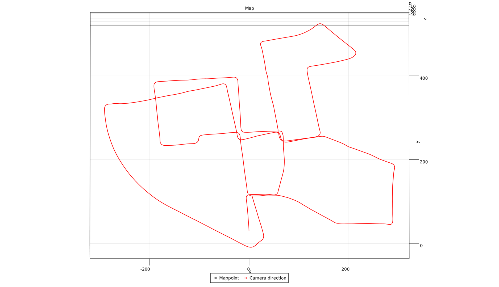

SLAM.jl
Simultaneous Localization and Mapping.
Features
- Monocular / Stereo modes.
- Bundle-Adjustment over a subset of Keyframes.
- Local Map Matching for re-tracking lost Mappoints back into Frame.
Install
]add https://github.com/pxl-th/SLAM.jl.gitUsage
Minimal abstract example of how to use.
using SLAM
camera = Camera(...)
params = Params(; stereo=false, ...)
manager = SlamManager(camera, params)
manager_thread = Threads.@spawn run!(manager)
images = Matrix{Gray{Float64}}[...]
timestamps = Float64[...]
for (time, image) in zip(timestamps, images)
add_image!(manager, image, timestamp)
sleep(1e-2)
end
manager.exit_required = true
wait(manager_thread)For a more detailed explanation, see Tutorial section. If you prefer looking at raw code instead, look at a complete KITTY Dataset example.
To launch the example, download KITTY Dataset, change base_dir and save_dir to you own (base_dir should be the root directory of KITTY dataset folder) and launch in from the REPL:
include("./example/kitty/main.jl")
# Launch SLAM
n_frames = 100
slam_manager, visualizer = main(n_frames)
# Replay saved result
replay(n_frames)These are 3 components in the SLAM.jl that need to run on a separate thread. So, remember to launch Julia with at least -t4 flag (+ 1 for the main thread).
Results
Final map on the 00 sequence taken from KITTY dataset in stereo mode.
